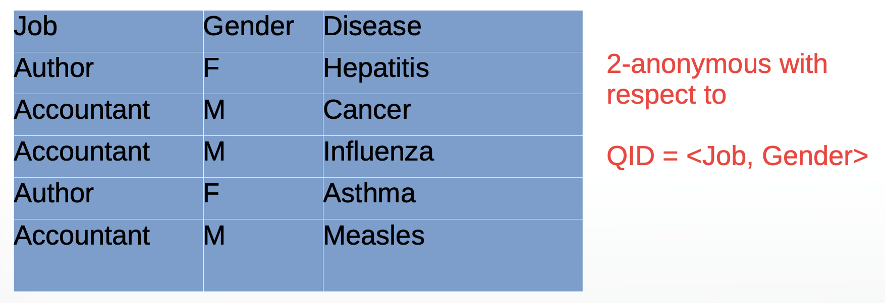

Introduction to Data Anonymisation
🚨 Case Study: Location Tracking at Scale
- Companies track smartphone users constantly, storing billions of data points.
- The NY Times Privacy Project obtained one such file:
- 50 billion location pings
- From over 12 million Americans across 2016–2017
“You may think your location data is anonymous… it’s not.”
Why It’s Hard to Hide
- Imagine your daily commute: does anyone else’s phone follow your same path?
- High-resolution geolocation data is virtually impossible to anonymise.
- Paul Ohm:
> “DNA is probably the only thing that’s harder to anonymise than geolocation data.”
📖 How iPhone apps track you
🕵️‍♀️ Data Anonymisation: What and Why
🔑 Key Privacy Goals
Disclosure Control
- Protect individual identity, allow group-level insights
Privacy–Utility Trade-off
- Balance between data usefulness and privacy risk
🔌 Privacy in the Digital Age

“You have zero privacy anyway — get over it.”
— Scott McNealy, Sun Microsystems CEO, 1999
“If you have something to hide, maybe you shouldn’t be doing it.”
— Eric Schmidt, former Google CEO, 2009
📠Defining Privacy
Dalenius (1977) on statistical data:
“Nothing can be learned about an individual from a released dataset that couldn’t be learned without it.”
But…
- If Alice knows Bob is 5cm shorter than average…
- And the average is published…
- She now knows Bob’s exact height
➡️ Highlights the power of side information
🧩 What Makes Data Personal?
Attribute Types
| Type | Examples |
|---|---|
| Identifiers | Name, ID number, Email |
| Sensitive | Health, Salary, Religion |
| Non-sensitive | Age, ZIP code, Education |
🚨 Quasi-identifiers: seemingly benign attributes that, in combination, reveal identity.
⌠Naive Anonymisation
- Just removing identifiers isn’t enough
- Combinations like ZIP + Gender + DOB identify 87% of the U.S. population (Sweeney, 2000)

🥠MA released “anonymous†health data.
📋 L. Sweeney used a copy of voter records containing names as well as ZIP, gender and DOB and by cross-referencing the two datasets, she identified the state governor’s records in the medical data!
🔢 K-Anonymity
Based on quasi-identifiers, make each person indistinguishable from at least \(k-1\) others in a dataset.

Techniques to Achieve K-Anonymity:
- Suppression – remove or mask values

- Generalisation – make values less specific

Limitations
Homogeneity attack: if all \(k\) rows have same sensitive value, identity could be inferred.

If we know John, who’s 19 years old and from Meath, is on the database, we can correctly infer he has a heart-related condition
🧱 Beyond k-Anonymity
🔀 l-Diversity
- Requires diverse sensitive values among \(k\)-group
🌫️ Differential Privacy
- Add random noise to numerical responses, but in such a way that aggregate results remain the same.
- Ensures individual contribution has minimal impact
- Widely used by Apple, Google, US Census
🔧 Other Techniques
Microaggregation
- Group records, replace sensitive value with group average
- Preserves structure while hiding individuals
Shuffling (Reverse Mapping)
- Model sensitive variable using public attributes
- Predict & rank values
- Shuffle original data based on these ranks
- Result: original values, but reordered
Randomised Response (Warner, 1965)
- Coin flip decides if respondent answers truthfully
- Provides individual deniability, preserves population estimates
🤔 Final Thoughts
- Perfect anonymisation is extremely difficult
- Privacy-preserving methods must consider:
- Side info
- Utility of data
- Statistical inference risks
Remember:
Data can be anonymous in theory, but not always in practice.